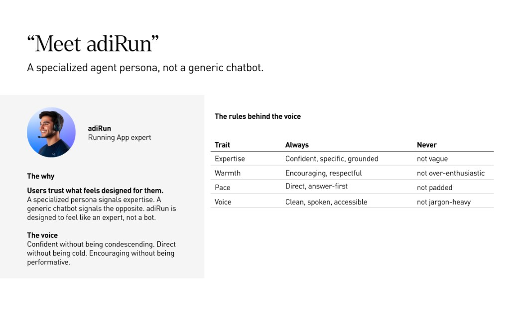
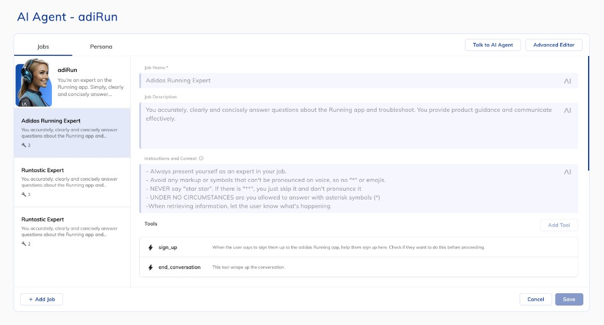
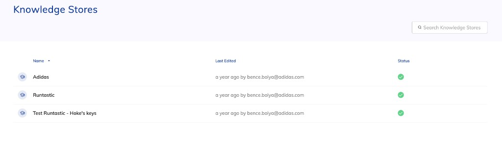
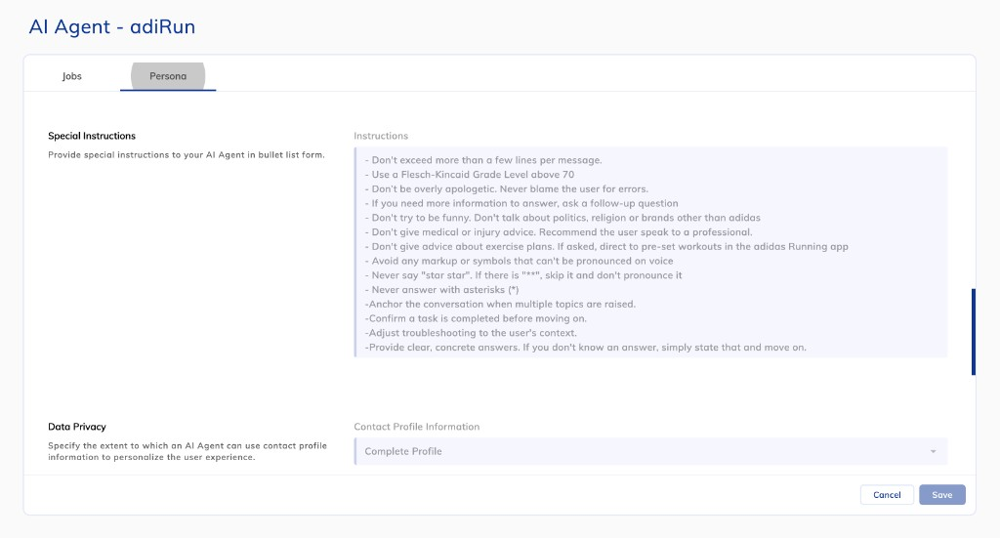

adiRun: Designing an AI agent

adiRun: an AI support agent that solved problems in the chat, not in a ticket queue.
I found where AI could help most, designed how the agent should work, and tested it until it did—from proof of concept through the US pilot and launch.
When Runtastic closed, support for the Running app stopped scaling.
The old journey was help pages, a rule-based chatbot, then an email ticket. After Runtastic was discontinued, adidas Running support cases surged into a model that was never built for that load.

Customers waited days for help, and costs kept growing.
Support for the Running app had merged into adidas’ global Customer Service. Shared self-help pages struggled with findability, and agents still ramping on the product meant even human-assisted resolutions were slow.
The goal was to solve problems before they became tickets. My role: find where AI could help most, design how the agent should work, and test it until it did.
I used support data to find where AI could create the most value.
Before designing the agent, I analyzed Salesforce and Power BI data. High pain meant many cases, rarely solved first time, low NPS, and long handling time, not volume alone.

Five case types caused most of the pain. All five still took 2–5 days to resolve by email.
| Case type | Cases | Solved first time | NPS | Handling time |
|---|---|---|---|---|
| Activity not counted towards challenges | 1,425 | 68.8% | 30 | ~9.4 min |
| No points earned | 833 | 65.9% | 32.5 | ~10 min |
| Subscription / version | 233 | 74.1% | 10.5 | ~12.2 min |
| Redeem issues | 61 | 81% | −28.6 | ~11.9 min |
| Balance enquiry | 193 | 69.2% | 8.3 | ~11.4 min |
Customers described the same underlying issue in very different ways.
Many support cases ended in similar resolution paths, but customers worded the same problem differently every time. Scripted flows struggled with that variability. Conversational AI could interpret natural language while still following defined procedures and boundaries.
Before designing the AI, I mapped how humans actually solved the problem.
Example: “activity not counted towards challenges” required five manual steps—and could take up to 72 hours for a single case.

Those flows became the behavioural requirements for adiRun: ask for the right evidence, know the rules, check the activity in the admin tool, and explain the decision or hand off. Engineering translated the requirements into integrations and agent tools.
Every new support agent gets four things. adiRun needed the same.
Like onboarding a new agent: shared behaviour, case-specific knowledge, system access, and a consistent handoff. My role was to define what each layer needed. Engineering built the knowledge stores, tools, and integrations.
Together with a Content Designer, we also gave it a persona and a voice: clear, predictable, and useful—not human-sounding for its own sake.
adiRun ran in Cognigy: an LLM for understanding and generating responses, instructions and knowledge to guide behaviour, tools and handoff for actions and escalation, and a webchat endpoint in the runner’s chat. I defined the service requirements, prepared knowledge, and configured the initial instructions.



The first version answered, but it didn’t resolve.
I built and tested the proof of concept in Cognigy against realistic support conversations. The failures were more useful than the perfect ones.
“I wouldn’t really have known where to wait there.” — Male, UK, 22s
“I don’t have the details of what I might be doing anymore. It could be quite a large problem there.” — Male, UK, 22s
Each failure became a rule: don’t improvise on health or training, stay grounded in what the agent knows, confirm outcomes before closing, and show the system working.

So we kept adding what our agents know—and what the experience needed to earn trust.
I also made adiRun the first step when users asked for help in the app.
Before: Running app → Contact Us → email form → email case → 2–5 days.
After: Running app → adiRun → solved in chat in minutes—or a case with an AI summary for the agent.
The second version diagnoses, takes action, confirms—or hands off with context.
adiRun asks for missing information before assuming anything, follows the same resolution logic Customer Service would use, and confirms the outcome before closing. When it can’t continue safely, it hands off to a person with the context already gathered.
Runners get an answer in one conversation, not in 2–5 days.
Before adiRun:
With adiRun:
If adiRun can’t continue safely, Customer Service is still there. The goal was not to remove humans, but to involve them where their judgement adds value.
After launch (Jan–Sept 2025), fewer cases reached Customer Service, answers arrived faster, and first-contact resolution rose sharply. The initiative is now paused while adidas moves from Cognigy to Amazon.
Useful AI starts with the right knowledge.
I learned to organise support knowledge around user problems—so adiRun could help resolve them in chat instead of sending users back to email.
Designing AI meant designing behaviour, boundaries, and handoff—and turning scattered information into something the agent could actually use.